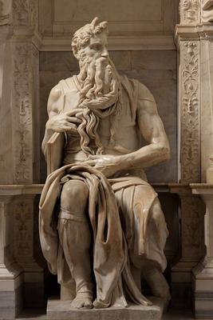

Si alguna vez has visitado una iglesia antigua, un museo de arte, o has visto la célebre escultura de Moisés realizada por Miguel Ángel, quizá hayas notado un detalle que desconcierta a cualquiera: ¿por qué Moisés tiene cuernos? Pero no, no se trata de que el mítico legislador hebreo hubiera cometido alguna infidelidad, ni de que el artista quisiera insinuar que era una especie de demonio bíblico. La explicación es mucho más graciosa, y al mismo tiempo, constituye uno de los ejemplos más famosos de cómo una traducción puede influir en el arte durante siglos.


Pero antes de entrar en materia, conviene hacer una aclaración importante desde el punto de vista de la historia académica: aunque Moisés es uno de los personajes más famosos de la tradición abrahámica, no existe evidencia arqueológica directa que confirme su existencia histórica. Hasta la fecha no se ha encontrado ninguna inscripción egipcia, papiro, estela, documento contemporáneo o evidencia arqueológica en Egipto o en el Sinaí, que mencione a Moisés o confirme el relato del Éxodo tal como aparece en la Biblia.
Por tal razón, el consenso predominante entre historiadores, arqueólogos y especialistas en el antiguo Oriente Próximo, considera que Moisés es más probablemente una figura legendaria, simbólica o un personaje compuesto, cuya historia fue elaborada siglos después de la época en que supuestamente habría vivido. Así que cuando vemos una pintura o una escultura de Moisés, no estamos viendo el retrato de un personaje cuya apariencia conozcamos, sino la imaginación de los artistas basada en los textos bíblicos y en las tradiciones religiosas.
Y precisamente esa imaginación dio origen a un inesperado detalle… por culpa de un traductor. Todo comenzó con tres letras. Como sabemos, los libros más antiguos que posteriormente formarían parte de la Biblia, fueron escritos principalmente en hebreo y griego. Y a finales del siglo IV, Jerónimo de Estridón (c. 340-420), considerado Padre y Doctor de la Iglesia, recibió del papa Dámaso I el encargo de traducir esos textos al latín. El resultado fue la famosa Vulgata (de vulgata editio, «edición para el pueblo»), que siglos después sería declarada por el Concilio de Trento (1546) como la versión oficial de la Iglesia católica.
Hasta aquí todo marchaba bien. El problema surgió cuando Jerónimo llegó al capítulo 34 del libro del Éxodo, donde se describe el supuesto regreso de Moisés del monte Sinaí después de conversar con «Dios» y recibir las tablas de la Ley. El texto hebreo utilizaba una palabra escrita sólo con tres consonantes: KRN. Y allí comienza el verdadero dolor de cabeza: el hebreo antiguo normalmente se escribía sin vocales, lo que significa que el lector debía deducir la pronunciación correcta según el contexto. Es decir, el mismo conjunto de consonantes, podía dar origen a palabras completamente distintas. Y Jerónimo optó por una interpretación que terminaría haciendo historia.
¿Rayos de luz… o cuernos? Resulta que la raíz hebrea podía entenderse como «karan», relacionada con cuernos, o como «keren», cuyo sentido en ese contexto aludía a rayos luminosos o resplandor. Y Jerónimo escogió la primera opción. Por tanto, en la Vulgata, Éxodo 34:35 quedó traducido de una manera que sugería que del rostro de Moisés salían cuernos. E incluso traducciones posteriores, como la Biblia Douay-Rheims en inglés, conservaron expresiones que hablaban de un Moisés «horned», es decir, «cornudo» o «con cuernos».
Ya se imaginan la escena: artistas medievales profundamente religiosos y convencidos de que la Vulgata era la máxima autoridad bíblica, hicieron exactamente lo que cualquier ilustrador haría: representaron literalmente lo que leían. Y si el texto decía cuernos… pues cuernos habría.
Sin embargo, con el paso del tiempo, otros estudiosos comprendieron que la traducción más adecuada era que el rostro de Moisés irradiaba luz, no que su cabeza tenía cuernos. Y algunas versiones modernas corrigieron esa interpretación. La Reina-Valera 1960 afirma: «Veían que la piel de su rostro era resplandeciente.» Mientras que la Biblia La Palabra, traduce: «Los israelitas contemplaban cómo el rostro de Moisés irradiaba luminosidad.»
Sin embargo, el daño —o el regalo para la historia del arte, según se mire— ya estaba hecho. Durante siglos los artistas ya habían pintado, iluminado manuscritos y decorado iglesias, mostrando a Moisés con dos pequeños cuernos saliendo de su cabeza. La primera representación conocida aparece en un manuscrito anglosajón del siglo XI, aproximadamente hacia el año 1050. Y a partir de entonces, la iconografía se difundió ampliamente por Europa. Este es, sin duda, un magnífico ejemplo de cómo una interpretación textual puede moldear la imaginación artística de toda una civilización.
Y Miguel Ángel Buonarroti tampoco escapó. Quizá la representación más famosa de este curioso Moisés cornudo sea su monumental escultura realizada entre 1513 y 1515. Tallada en un enorme bloque de mármol blanco y con más de dos metros de altura, la obra muestra claramente dos pequeños cuernos sobre la cabeza del personaje. Y no fue un descuido. Miguel Ángel simplemente estaba siguiendo la tradición iconográfica heredada de siglos anteriores, y basada en la autoridad de la Vulgata. Según una famosa tradición —probablemente legendaria, aunque muy popular—, cuando el célebre artista italiano terminó la escultura quedó tan impresionado por su realismo, que golpeó la rodilla de la estatua con su martillo exclamando:
—»¿Por qué no hablas?»
Sea cierta o no la anécdota, la estatua sigue siendo una de las obras maestras del Renacimiento, y aún puede contemplarse en la Basílica de San Pietro in Vincoli, en Roma.
Ahora bien, desde la perspectiva de la historia del arte, el caso de los cuernos de Moisés resulta ser sumamente interesante, porque demuestra que las obras artísticas no siempre representan la realidad —ni siquiera la realidad del texto que pretenden ilustrar—, sino las interpretaciones que una cultura hace de ese texto. Unas pocas consonantes hebreas, una decisión de traducción tomada hace más de mil seiscientos años, y la enorme autoridad de la Vulgata, bastaron para llenar Europa de pinturas, manuscritos, vitrales, frescos y esculturas, donde Moisés aparece con un aspecto que probablemente nunca imaginaron los autores originales del relato bíblico.
Y surge aquí una ironía difícil de ignorar. Hoy la mayoría de estudiosos considera que Moisés pertenece más al terreno de la tradición literaria y la memoria religiosa, que al de la historia verificable. Claramente no sabemos cómo representar físicamente a un personaje salido de la imaginación que carece de descripciones específicas, y sin embargo, millones de personas identifican inmediatamente su imagen… ¡gracias a unos cuernos nacidos de una confusión lingüística! Una curiosa lección sobre cómo funcionan las tradiciones: a veces un simple error de traducción puede ser mucho más duradero que la propia corrección.
Al final Moisés ni siquiera tuvo una existencia real desde una perspectiva histórica, pero seguramente se trató de un personaje que nunca fue concebido con cuernos. Y sin embargo, el arte nos recuerda que las ideas —incluso las más equivocadas— tienen una extraordinaria capacidad para sobrevivir durante siglos, cuando logran abrirse camino entre los libros, los pinceles… y los cinceles.
[Godless Freeman]
[Crédito de imagen: Jörg Bittner Unna]
Referencias:
https://www.ngenespanol.com/culturas/dos-cuernos-moises-miguel-angel/
https://es.wikipedia.org/wiki/Jer%C3%B3nimo_(santo)
https://es.wikipedia.org/wiki/Mois%C3%A9s_de_Miguel_%C3%81ngel
Comentarios
Comments powered by Disqus